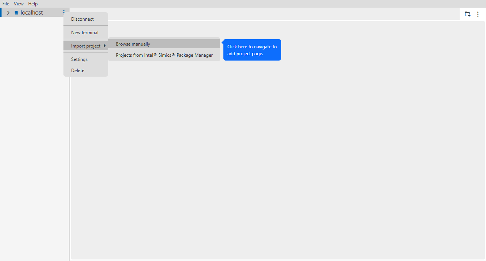
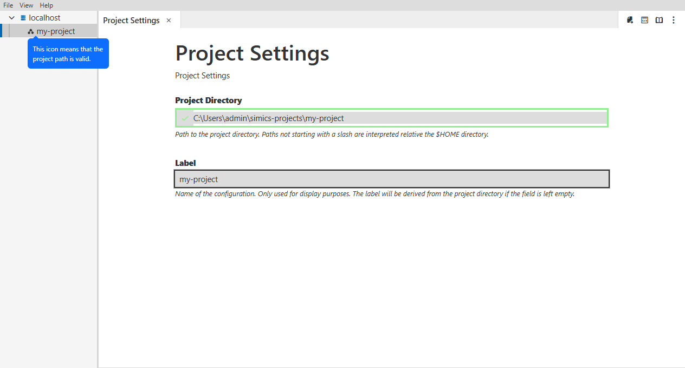
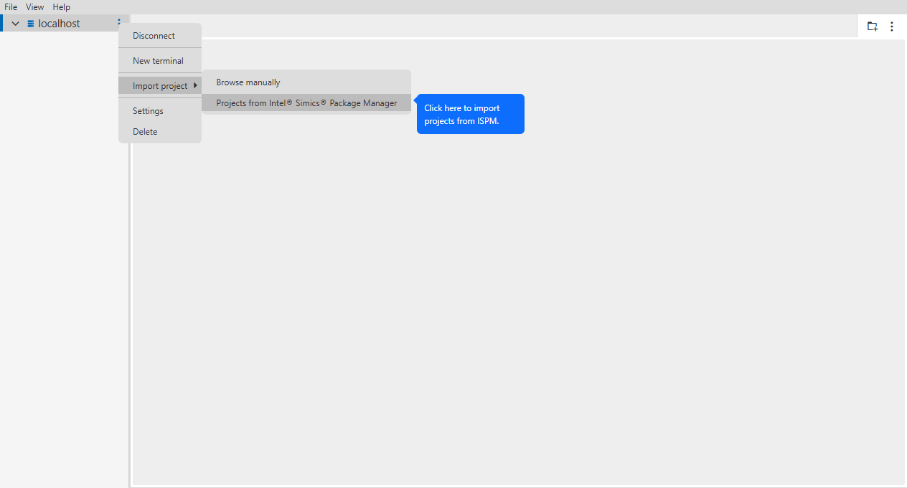
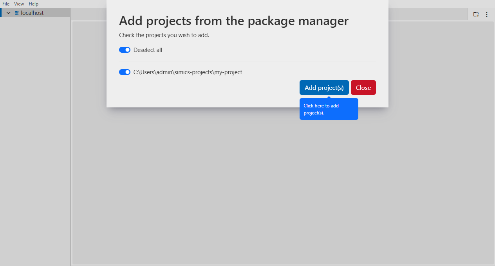
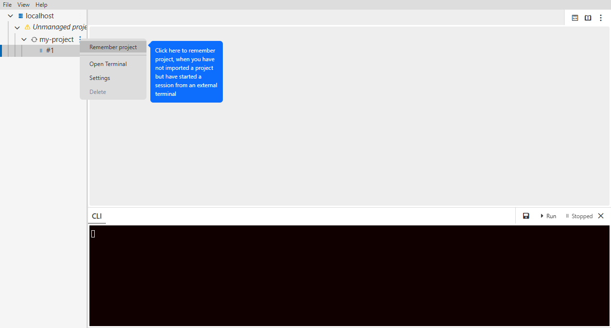
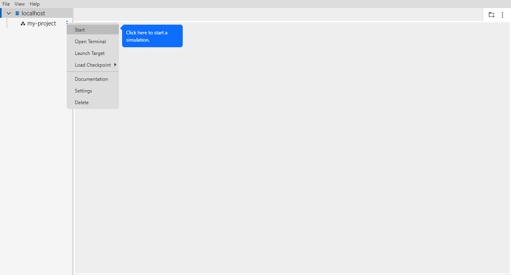
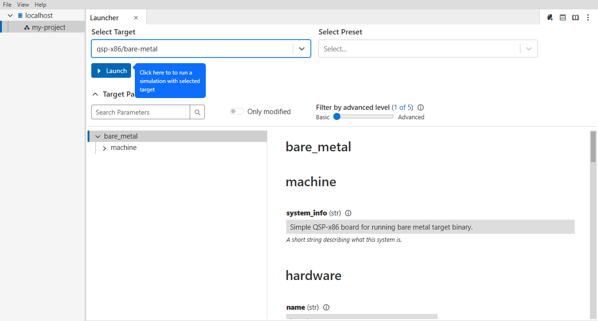
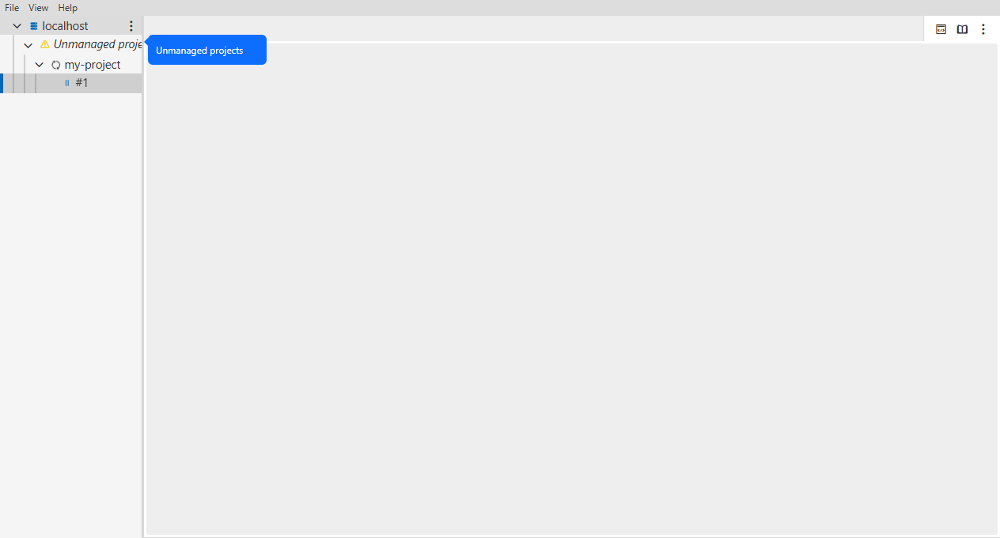

This document describes the features of the GUI, with explanations on their usage and implementation. A gentler introduction is provided in the Getting Started document.
A project is a directory which contains all necessary user-specific files needed to run a simulation and develop models.
- Click on the three dots on the host.
- Hover over "Import Project" and click on "Browse Manually".
- Choose your project and press "Add Project".

You can see that your project path is valid when the icon is shown like this in the sidebar.

- Click on the three dots on the host.
- Hover over "Import Project" and click on "Projects from Intel Simics Package Manager".

A prompt will open with your projects created with the Package Manager.
- Uncheck the project(s) you don't want to add.
- Click on "Add Project(s)".

If you have started a simulation session from an external terminal without importing the project first, that project will show up under "Unmanaged projects". You can add this project.
- Start a simulation from an external terminal.
- Under "Unmanaged projects", click on the three dots of the project.
- Choose "Remember project".

- Open the project context menu by clicking on the three dots or right click on the project.
- Click on "Start".

- Open the project context menu by clicking on the three dots or right click on the project.
- Click on "Target Launcher".
- Select the target, then click "Launch".
Before launching the target, you can select presets or modify target parameters. For more information about targets, see the Simics documentation.

For a temporary project, it's not necessary to add the project first in order to run the simulator. You can start a simulation session from an external terminal and that project will show up under "Unmanaged projects".
Limitations: If you have started a session from project folder which is symlinked. Projects can incorrectly show up under "Unmanaged projects".

Copy and paste may not behave as expected.
In the simulator console, serial console, Windows powershell*, Linux terminal:
- Copy with ctrl+shift+c, ctrl+ins or mark the text
- Paste with ctrl+shift+v or shift+ins
In the UI eg. in Settings:
- Copy with ctrl+c
- Paste with ctrl+v
Alternative way to paste in Windows powershell:
Alternative way to paste when using GUI in Linux:
- Paste with middle mouse click
Currently it's not possible to use shortcuts to copy and paste in the graphical console.
After saving a checkpoint, the GUI may have to be restarted in order for the
newly created checkpoint to be show up among available checkpoints